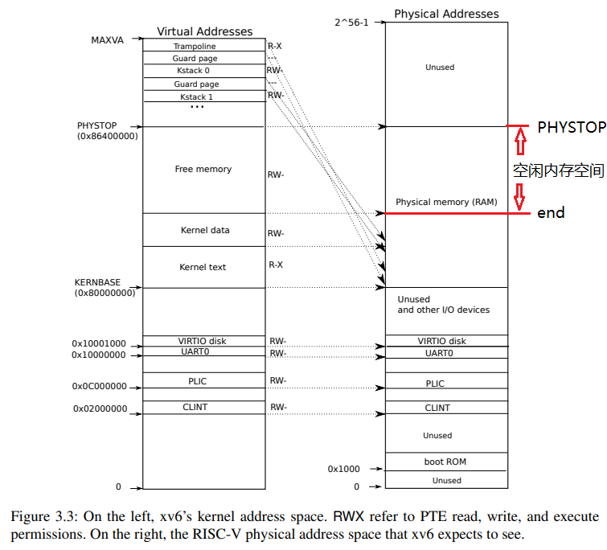
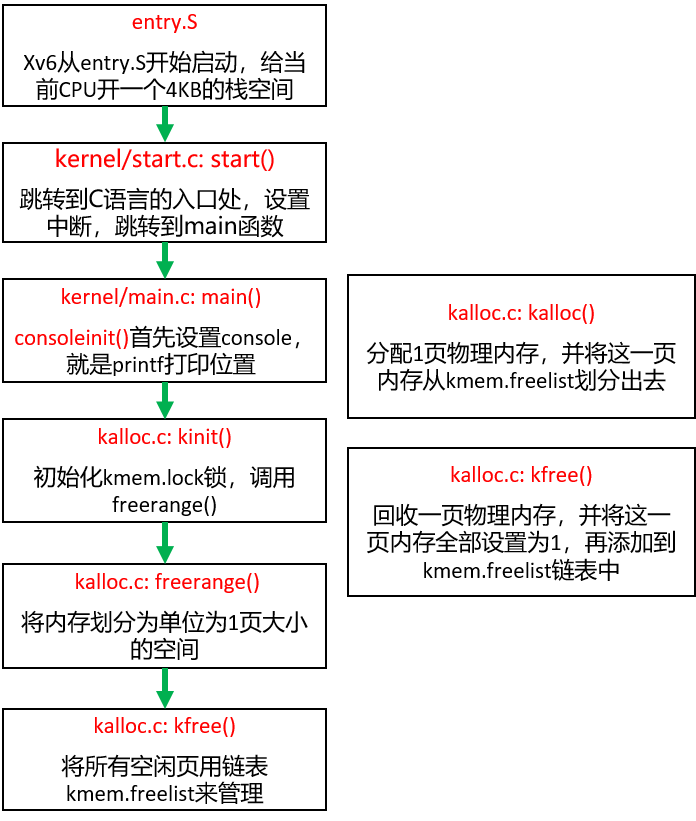
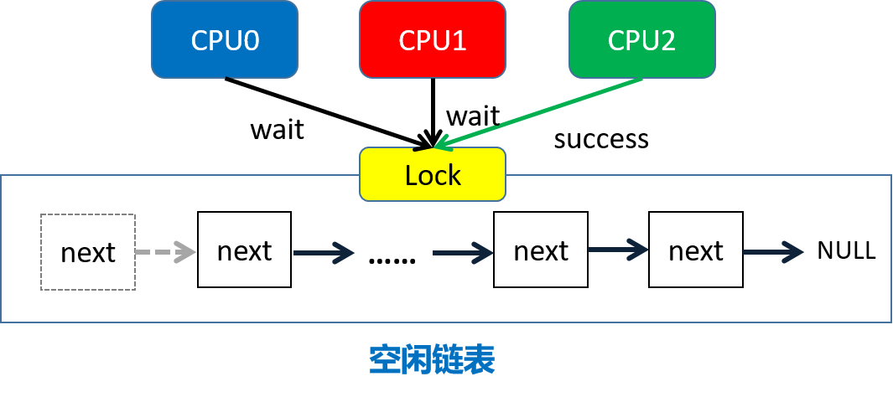
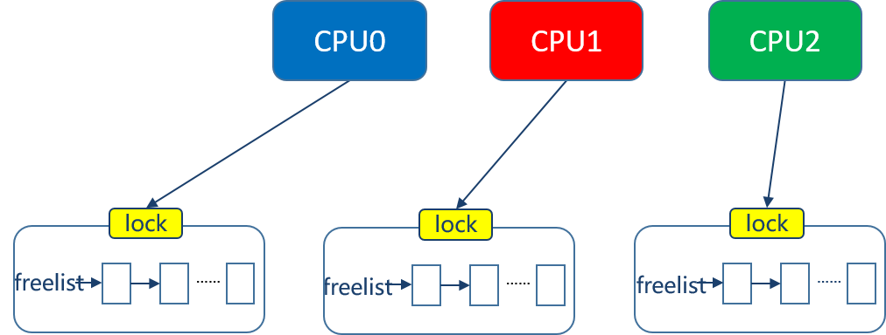
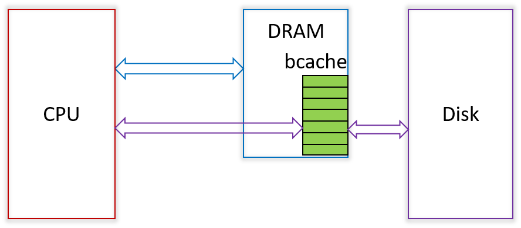
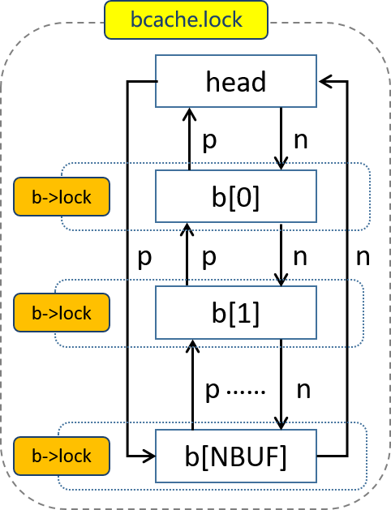
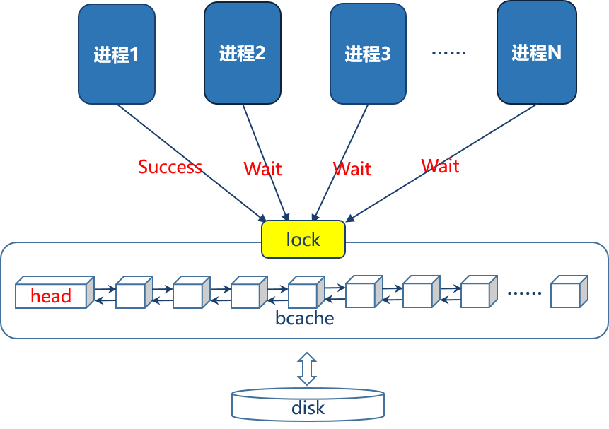
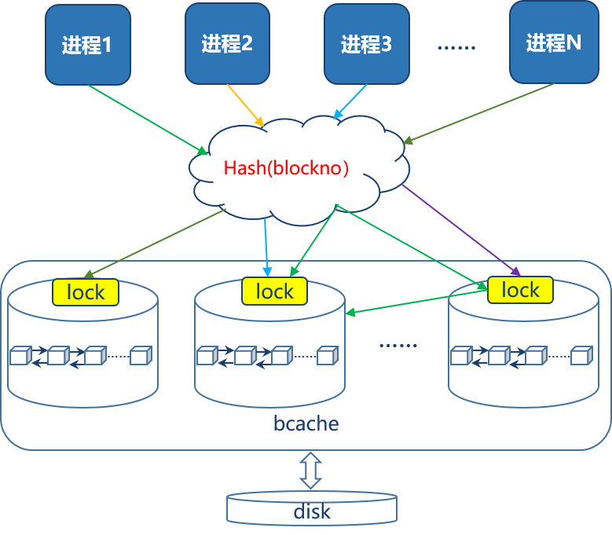
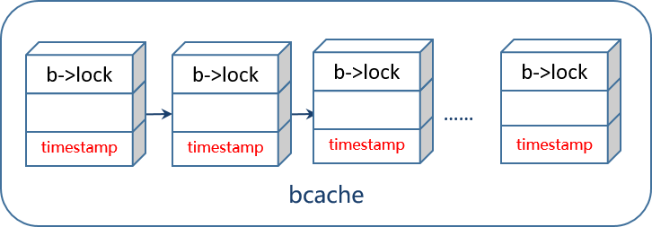
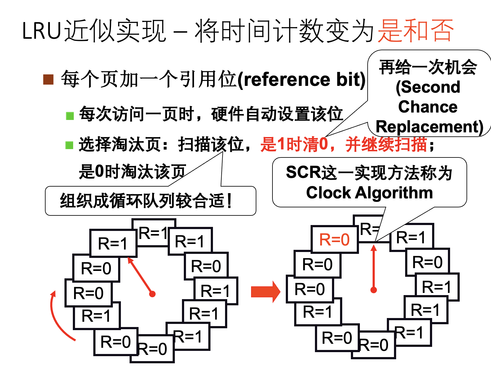

实验原理¶
阅读说明
本页只介绍 Lab3 基础任务的两部分原理：
- 第 1 节：内存分配器：介绍
kalloc的空闲页链表、锁和每 CPU 优化。 - 第 2 节：磁盘缓存：介绍
bcache的缓存块、锁和哈希桶优化。 - 完成基础任务一、任务二前，应先读完这两节。AI 推理服务附加题的背景、原理、任务和测试请参阅 part5。
阅读第 1、2 节时，不要把本页当作代码答案，而要先弄清两类数据结构及其并发控制：
- 原版 xv6 中每把锁保护哪些数据和操作？
- 这些设计如何保证正确性，又为什么在多核并发下会产生性能瓶颈？
本实验一句话总结
锁的第一目标永远是 保证正确性 ，不是追求性能。
Lab3 要做的，不是把锁“删掉”，而是把原来过于集中的竞争拆开：在仍然保证正确的前提下，让不相干的操作尽量不要挤在同一把锁上。
1. 内存分配器（Memory Allocator）¶
读完这一部分，你至少应该能回答
- xv6 的内存分配器在管理哪一段物理内存？
freelist里面存的到底是什么？kalloc()和kfree()分别做了什么？- 为什么原版只有一把
kmem.lock就会产生明显竞争？ - 为什么“每 CPU 一条空闲页链表”通常能减少竞争？
1.1 xv6 把哪段物理内存交给分配器¶
在 xv6 的启动配置中，Makefile 通过 -m 128M 告诉 QEMU 为虚拟机提供 128 MiB 的 RAM：
QEMUOPTS = -machine virt -bios none -kernel $K/kernel -m 128M -smp $(CPUS) -nographic
QEMU virt 平台的物理内存起始地址为 0x80000000。xv6 运行时并不会读取 QEMU 的 -m 参数，而是在 kernel/memlayout.h 中通过宏常量静态定义它认知的可用物理内存区间：
#define KERNBASE 0x80000000L
#define PHYSTOP (KERNBASE + 128*1024*1024)
KERNBASE 对应物理内存起始地址，PHYSTOP 是 xv6 计算得到的内存上限。当前 -m 128M 和 PHYSTOP 数值匹配，但二者是相互独立的配置，不会自动同步：如果调大 QEMU 分配的内存却不修改 PHYSTOP，多出的内存内核无法使用；如果 PHYSTOP 设置得比 QEMU 实际内存更大，内核会尝试访问不存在的物理地址，引发异常。
但要注意，不是 从 0x80000000 到 PHYSTOP 的所有空间都能直接拿来分配。
原因很简单：操作系统自己也要占内存。内核代码、内核数据、各种启动时就要放进去的内容，都已经在这块区域里了。
所以真正能交给分配器管理的，是：
- 从内核结束位置
end开始； - 一直到
PHYSTOP为止。
也就是说，分配器管理的是“剩下那部分空闲物理内存”。

图里哪些概念和本实验最相关
可以把这张图按“左边看映射，右边看资源”来读：
- 左图是 内核虚拟地址空间：说明内核“怎么看”内存，也就是不同用途的地址在虚拟地址里排成什么样。
- 右图是 物理地址空间：说明机器里“真实有哪些内存资源”，其中既有 RAM，也有设备寄存器映射（如 CLINT / PLIC / UART / VIRTIO）。
- 中间的虚线箭头表示一种对应关系：内核中的一部分虚拟地址，会映射到右边那块真正的物理 RAM。
对这道 kalloc 题来说，最重要的是先把下面几块区分开：
- kernel text / data：已经被内核自己占用的区域，里面放的是内核代码、全局数据等。这部分虽然也在 RAM 里，但显然不能再拿去当“空闲页”分配给别人。
- free memory：当前还没被占用的那部分 RAM，才是页分配器真正管理的对象。你后面在
kalloc()里拿到的页，本质上就来自这里。 - kstack：内核栈对应的虚拟地址位置。它提醒你：内核里还有很多运行时会使用的内存对象，而这些对象背后的物理页，最终往往也是从
free memory中申请出来的。 - trampoline：用户态和内核态切换时使用的一页特殊映射。你不需要在本实验里修改它，但要知道：出现在内核地址空间里的内容，不一定就是
kalloc可以随便分配、回收的普通空闲页；有些区域用途是固定的，只是被映射进了内核空间而已。
所以读这张图时，最关键的结论只有一句：
- 真正能交给分配器维护的，并不是整块 RAM，而是去掉内核已占用部分后，
end到PHYSTOP之间剩下的页。
如果你后面写代码时一时记不清图里的细节，也至少要记住这件事：kalloc 维护的是“剩余空闲物理页的集合”，而不是“所有物理内存”。
本实验最关心的，是图中右侧 DRAM 里那一大块 free memory。
1.2 xv6 怎样表示“空闲页”¶
xv6 的页分配器定义在 kernel/kalloc.c 中，最核心的数据结构非常小：
struct run {
struct run *next; // 指向下一张空闲页
};
struct {
struct spinlock lock; // 保护空闲页链表
struct run *freelist; // 空闲页链表的头指针
} kmem;
可以这样理解：
- xv6 以 4KB 一页 为单位管理物理内存；
- 每个空闲页都会被挂到一个单链表里；
- 这个链表的头指针就是
kmem.freelist； run.next指向下一页空闲页。
这里最容易让人困惑的一点是：
“
struct run这个结点本身放在哪？”
更准确地说：某一页空闲时，xv6 会把这张 4KB 页起始地址处的几个字节临时当作 struct run 来用。
这些空闲页来自 end 到 PHYSTOP 之间的可分配区间。页空闲时，页首保存 next 指针；页一旦被 kalloc() 分配出去，这几个字节就重新变回普通数据；等 kfree() 回收后，再次被当作链表结点使用。
可以用下面这段示意代码来帮助理解：
char *pa = ...; // 一张空闲页的起始地址
struct run *r = (struct run*)pa; // 把页首解释成 struct run
r->next = kmem.freelist; // 挂到 freelist 表头
kmem.freelist = r; // 更新 freelist 头指针
这里并不是“额外申请了一个 struct run 对象”，而是 直接复用空闲页自己的起始位置 来存链表指针。
所以 freelist 并不是“另外开了一块内存专门存链表”；它其实是把每张空闲页自己串起来了。
1.3 初始化时，这条空闲页链表怎么建起来¶
系统启动时，会调用：
kinit()：初始化分配器freerange()：遍历一段地址区间里的所有页kfree()：把单个页挂回空闲链表
这三者的关系可以概括成：
kinit()知道“哪些内存现在是空闲的”；kinit()调freerange()去遍历这段空闲区间；freerange()再一页一页地调用kfree()；- 于是所有空闲页最终都被串进了
freelist。
所以，虽然 kfree() 这个名字看起来像“运行时释放页”，但在系统初始化阶段，它也被拿来做“把空闲页注册进分配器”的工作。

1.4 kfree() 和 kalloc() 平时分别做什么¶
可以把它们想成两个相反方向的操作：
kfree()：把一页还回去kalloc()：从空闲页链表里拿一页出来
1.4.1 kfree()：释放一页¶
kfree(void *pa) 做的事情可以概括为：
- 检查参数是否合法；
- 把整页内容填成某个固定值（xv6 里常见是填
1）； - 把这页挂回
freelist头部。
这里“把整页填成 1”不是为了功能本身，而是为了 尽早暴露 bug。如果某段代码错误地继续使用一块已经释放的内存，那么它读到的就不再是原来的正常内容，而是一堆被故意覆盖过的值，问题更容易暴露出来。
1.4.2 kalloc()：分配一页¶
kalloc() 则更直接：
- 看
freelist头结点是不是空； - 如果不空，就把头结点摘下来；
- 返回这一页的地址。
也就是说，原版 xv6 的页分配策略非常朴素：
- 不做复杂搜索；
- 不做最佳匹配；
- 就是从空闲链表头部拿一页。
把 kalloc() / kfree() 放在一起看，整个结构其实很简单：
kalloc()：从链表头拿kfree()：把页塞回链表头
1.5 锁到底保护了什么¶
先回答这个关键问题
kalloc.c 里到底什么东西需要锁保护？
答案是：对 freelist 的修改。
原因也很直观：
kalloc()会把链表头摘掉；kfree()会把一页插回链表头；- 这些操作都在读写共享指针
kmem.freelist； - 多个 CPU 如果同时改它，就可能把链表改坏。
所以原版 xv6 用一把 kmem.lock 来包住这类操作：
- 进入
kalloc()/kfree()里的关键区前先加锁； - 改完链表后再解锁。

1.6 为什么原版会有明显锁竞争¶
原版设计的问题不在于“逻辑错了”，而在于：
所有 CPU 都在抢同一把锁。
当多个 CPU 同时高频调用 kalloc() / kfree() 时，虽然每次临界区都不算特别长，但因为请求太密集，还是会出现：
- CPU0 正在改
freelist - CPU1 只能等
- CPU2 也只能等
于是并行度就被这一把锁卡住了。
这也是为什么 kalloctest 里会看到 kmem 的 #fetch-and-add 很大：它本质上反映的是“很多次拿锁都没有一次拿到，只能反复自旋等别人放锁”。
1.7 为什么“每 CPU 一条空闲页链表”通常更快¶
这就是本实验任务一的核心思路。
如果把原来的：
- 一条全局
freelist+ 一把全局锁
改成：
- 每个 CPU 一条
freelist+ 每条链表各自的锁
那么多数情况下会发生什么？
- CPU0 只动自己的链表；
- CPU1 只动自己的链表；
- CPU2 只动自己的链表；
- 它们互相之间不必总挤在同一把锁上。
这样，很多原本“必须串行”的操作，就能并行了。

当然，这种设计不是没有代价：
- 某个 CPU 可能很快把自己的空闲页用光；
- 另一个 CPU 却还剩很多页。
所以通常还需要补一个“偷页 / 借页”逻辑：
- 本地链表空了；
- 再去其他 CPU 的链表里找可用页。
但即使如此，整体竞争通常还是会比“所有人永远抢一把全局锁”小很多。
唯一必须始终保证的是：
每一张空闲页，同一时刻只能属于一条
freelist。
否则就会出现“一张页被分配两次”的严重错误。
2. 磁盘缓存（Buffer Cache）¶
读完这一部分，你至少应该能回答
- 为什么文件系统需要 buffer cache？
bcache和buf分别表示什么？bcache.lock和b->lock各自保护什么？bread()/bget()/brelse()的基本流程是什么？- 为什么
bcache不能像kalloc那样简单做成“每 CPU 一份”？ - 为什么这一题比
kalloc更容易写出死锁？
2.1 为什么 xv6 需要 Buffer Cache¶
xv6 的文件系统最终是和磁盘打交道的，而磁盘访问比内存慢得多。如果每次读文件都直接去磁盘拿数据，会非常慢。所以系统通常会把“最近用过、可能还会再用”的磁盘块先缓存在内存里。这就是 Buffer Cache 的作用。
从调用关系看，buffer cache 正好夹在 文件系统 和 磁盘驱动 之间：
- 对上，文件系统里的
inode、目录、日志等代码不会直接操作磁盘，而是通过bread()/bwrite()这类接口按块读写数据； - 对下，buffer cache 真正需要把某个块从磁盘读入、或把修改后的块写回磁盘时，又会继续调用底层磁盘驱动；
- 因此，它本质上就是一层“位于文件系统之下、位于磁盘驱动之上”的块缓存。
因此它至少承担了三件事：
- 缓存加速：减少重复读盘；
- 一致性约束：保证同一个磁盘块在缓存里不要出现多份副本；
- 并发控制：保证多个内核执行流同时访问缓存时不会把状态弄乱。

2.2 bcache 是什么¶
先看整个缓存系统的“总管”：
struct {
struct spinlock lock; // 保护整个缓存系统的公共结构
struct buf buf[NBUF]; // 固定数量的缓存块
struct buf head; // 双向链表的哨兵结点
} bcache;
可以把 bcache 理解成整个 buffer cache 的“总管”。它并不代表某一个磁盘块，而是负责管理“系统里所有缓存块”的公共状态。这里最值得先抓住的是：
buf[NBUF]：固定数量的一组缓存块；head：把这些缓存块串成一条双向链表；bcache.lock：保护这条全局链表，以及“哪个块当前由哪个buf表示”这类公共信息。

所以看 bcache 时，重点不是某个块的数据内容，而是：整套缓存系统是怎么把很多个 buf 组织起来并统一管理的。
2.3 buf 是什么¶
如果说 bcache 是“总管”，那么 buf 就是“其中一个具体缓存块”：
struct buf {
int valid; // data 中的数据是否有效
int disk; // 底层磁盘驱动是否仍在占用这个 buf（I/O 未完成时为 1）
uint dev; // 这个 buf 属于哪个设备
uint blockno; // 这个 buf 缓存的是哪个块号
struct sleeplock lock; // 保护这个 buf 内部的数据
uint refcnt; // 当前有多少引用者
struct buf *prev; // 双向链表中的前驱
struct buf *next; // 双向链表中的后继
uchar data[BSIZE]; // 真正缓存的块数据
};
一个 buf 里最值得先抓住的是这些字段：
dev：这个缓存块对应哪个设备；blockno：它缓存的是哪个磁盘块号；data[BSIZE]：真正的块数据；valid：这块数据是不是已经从磁盘读进来了；disk：底层磁盘驱动是否还在占用这个buf，也就是对应 I/O 是否还没完成；refcnt：现在有多少人正在引用这个缓存块；lock：谁正在独占使用这个缓存块的数据；prev/next：它在双向链表中的位置。
其中 prev 和 next 同时存在，不是为了“看起来完整”，而是因为原版 xv6 的缓存管理很依赖 双向链表：
- 命中查找时会遍历链表；
- 释放时可能要把结点移到链表前面；
- 选择可替换块时常常要从另一端开始找。
如果只有单向指针，很多“从链表中摘下再插回去”的操作会麻烦很多。
2.4 bcache.lock 和 b->lock 分工有什么不同¶
这是这题最容易混淆的点之一。
2.4.1 bcache.lock：保护“缓存系统的公共结构”¶
它保护的是整个 buffer cache 的公共状态：例如这批 buf 在全局链表里怎么连接，某个 (dev, blockno) 当前由哪个 buf 表示，以及 refcnt 这类与全局管理有关的状态。
2.4.2 b->lock：保护“某一个块里的数据”¶
当某个执行流拿到了某个 buf，准备读写它的数据时，需要拿的是这个 buf 自己的睡眠锁。
你可以把它理解成：
“现在谁在实际使用这块缓存里的内容？”
所以这两把锁不是重复的，而是各管一层：
bcache.lock管“全局组织结构”b->lock管“单个缓存块的独占使用”
2.5 bcache 的几个关键操作怎么串起来¶
如果把整个流程按调用关系梳理，可以先抓住下面这些函数：
binit()：初始化缓存系统bread()：读某个块bget()：找到或分配某个缓存块bwrite()：把缓存块写回磁盘brelse()：释放缓存块bpin()/bunpin()：调整引用计数，避免块被替换
2.5.1 binit()：把缓存系统搭起来¶
系统启动时，binit() 会：
- 初始化
bcache.lock - 初始化每个
buf的睡眠锁 - 把所有
buf串到同一条双向链表上
这一步相当于把“缓存池”先建好。
2.5.2 bread() / bget()：先找缓存，没有再分配¶
典型读路径是：
- 上层文件系统调用
bread(dev, blockno)； bread()进一步调用bget()；bget()先看目标块是不是已经在缓存里；- 如果命中，就直接返回对应的
buf； - 如果未命中，就找一个可替换的空闲
buf，把它改造成要找的那个块； - 再通过底层磁盘驱动把数据真正读进来。
底层真正做磁盘 I/O 的是 virtio_disk_rw(struct buf *b, int write)：
write == 0：从磁盘读到缓存write == 1：从缓存写回磁盘
2.5.3 bwrite()：把缓存中的数据写回磁盘¶
如果某个缓存块里的 data 被改了，需要用 bwrite() 把它写回磁盘。
2.5.4 brelse()：我用完这块了¶
brelse() 的核心作用是：
- 释放
b->lock - 减少
refcnt - 如果没人再用它，就把它放回更适合被未来命中的位置
xv6 这里用的是类似 LRU（Least Recently Used，最近最少使用）的思路。一般认为，刚刚被访问过的块在后续再次被访问的概率更高，因此应当优先保留；而长时间未被访问的块再次被使用的可能性相对更小，因此在缓存不足、需要选择一个 buf 进行替换时，通常更适合作为替换对象。在这条链表里，靠前表示“最近使用过”，靠后表示“更久没有使用”；因此发生未命中时，通常从靠后的一端寻找可替换的 buf。
2.6 为什么 bcache 也会有锁竞争¶
原版 xv6 的一个关键特点是：
所有缓存块都被组织在 同一条全局链表 上。
这意味着：
- 查找块，要动这条链表；
- 替换块，要动这条链表；
- 释放块，也经常要动这条链表。
于是很多操作都会去碰同一把 bcache.lock。
只要并发读写稍微多一点，这把锁就会变成瓶颈。

2.7 为什么 bcache 不能简单照搬“每 CPU 一份缓存”¶
这是一个非常值得想清楚的问题。
对 kalloc 来说，把空闲页按 CPU 分开，问题不大，因为“页”本来就是会被分配给不同执行流独立使用的资源。
但 bcache 不一样：
- 它缓存的是 共享的磁盘数据；
- 同一个磁盘块，很多进程都可能来访问；
- 如果你简单做成“每 CPU 一份缓存”，就可能出现：
- CPU0 缓存了块 X
- CPU1 也缓存了块 X
- 两边内容不一致
这样就会直接破坏“同一个磁盘块在内存里只有一份副本”这个关键约束。
所以 bcache 的优化重点不是“把数据完全分家”，而是：
- 在 不破坏唯一副本语义 的前提下；
- 尽量把锁竞争分散开。
2.8 常见优化方向：哈希桶、时间戳、CLOCK¶
先有一个整体认识
MIT 官方更明确的建议是：
- 哈希桶：把不同块号分散到多个桶里，降低查找时的锁竞争
- 弱化甚至去掉全局 LRU 链表：只要 miss 时还能找到可复用的空闲
buf即可
这两点可以进一步归成两个方向：哈希桶 主要用来分散查找和加锁时的竞争，时间戳 和 CLOCK 主要用来决定未命中时替换哪个 buf。因此，它们既可以结合使用，也可以单独使用；能否通过测试，仍取决于你的并发控制和替换流程是否设计正确。
2.8.1 哈希桶¶
哈希桶的思路最容易理解：
- 不再让所有块都挤在一条链表里；
- 而是按
blockno的某个哈希值，把块分散到多个桶里； - 每个桶单独配一把锁。
这样，如果两个进程访问的是落在不同桶里的块，它们通常就不必互相等待。
一个典型思路是：
- 先把磁盘块号 blockno 除以桶的数量 NBUCKETS，取余数作为桶的编号。例如，NBUCKETS 为 13 时，块号 27 会被分配到第 27 % 13 = 1 号桶。原因是很多块号访问并不是完全随机的，往往会带有某种步长或周期；如果桶数取合数，
blockno % NBUCKETS的结果更容易和这种规律对齐，导致大量块号集中落到少数几个桶里；取质数时，这种集中碰撞通常会轻一些。 - 在该桶里查找是否命中；
- 未命中时，再进入“分配 / 替换”流程；
- 如果要从别的桶里拿走一个空闲块，必须特别小心并发和死锁问题。

2.8.2 时间戳¶
原版设计里，最近是否使用过某个块，主要靠链表顺序来体现。
时间戳思路则是：
- 不一定非要维持一条严格的全局 LRU 链表；
- 可以直接在每个
buf上记录“最近一次使用时间”； - 需要选牺牲者时，再在
refcnt == 0的buf中找最久没被使用的那个。
这样做的好处是：
- 有时能减少
brelse()对全局结构的改动； - 进而减少它对共享锁的依赖。
如果“最近是否使用过”主要靠 全局 LRU 链表 来表示，那么 brelse() 在释放一个 buf 时，往往不只是把 refcnt 减一，还要顺手调整它在链表中的位置。这样一来，brelse() 改动的就不只是这个 buf 自己的状态，还包括整个缓存系统共享的链表结构。
而如果改用时间戳，那么“最近是否使用过”这个信息不一定非要靠链表位置来表示。很多时候，brelse() 只需要：
- 把引用计数减回去；
- 顺手更新一下这个
buf的最近使用时间。
这样就不必每次释放都去挪那条全局链表，因此对共享结构的改动更少，对全局锁的依赖也往往更弱。
xv6 中可以利用 ticks 作为一个简单的时间依据；不过它只是粗粒度时钟，读写时间戳时仍然要注意并发同步。

2.8.3 CLOCK 算法¶
如果你学过页面替换算法，就会发现这里也可以借用 CLOCK 的思路。
它的基本思路是：
- 不必每次都精确维护“最久最少使用”；
- 用一个访问位 + 一个环形指针，就能近似地找到可替换块。
一个常见实现方向是：
- 把缓存块组织成一个环；
- 每个块维护一个“最近是否被访问”的标记；
- 未命中时，沿着环找可替换块；
- 访问位为
1的先清零、跳过； - 访问位为
0的就拿来替换。
这种方案的优点是思路统一，缺点是并发控制也需要你自己重新想清楚。

2.9 为什么 bcache 比 kalloc 更容易写出死锁和竞态¶
kalloc 那题大多数时候只是在“多个链表之间挪页”，结构相对简单。
但 bcache 这题除了查找，还会涉及：
- 命中 / 未命中判断
- 选择牺牲者
- 把某个
buf从一个管理结构里移走 - 再放到另一个地方
- 同时还要保证“同一个块不能出现两份副本”
这就比 kalloc 更容易出两类问题：
2.9.1 死锁：大家互相等锁¶
比如两个线程：
- 线程 A 先拿了桶 1 的锁，又想拿桶 2 的锁；
- 线程 B 先拿了桶 2 的锁，又想拿桶 1 的锁。
那么它们就可能彼此卡死。
这也是为什么“同时持有两把及以上自旋锁”在这题里要特别小心。
2.9.2 竞态：你刚看到的结果已经过期了¶
还有一种常见错误是：
- 你在桶 A 中查了一遍，发现目标块“不在”；
- 于是你把桶 A 的锁放掉；
- 再去别处找空闲块、准备分配；
- 但就在这段时间里，另一个线程已经把目标块塞进来了。
这样你原来那个“未命中”的判断就过期了。
如果你不重新检查，就可能把同一个磁盘块分配出两份缓存副本。
这就是为什么：
“先查一次未命中，再放锁，再直接分配”
通常是不安全的。
2.10 一种较稳妥的替换 / 分配思路¶
说明
下面以 哈希桶 的做法为例，说明未命中时替换 / 分配的一种常见处理思路。
一种较稳妥的流程可以概括为：
- 先获取请求对应桶的锁，检查目标块是否已经在缓存中；如果命中，就直接使用；如果未命中，就释放该桶的锁，进入替换 / 分配流程。
- 进入替换 / 分配流程后，先获取一把用于分配阶段的全局锁，再重新获取原桶的锁；如果候选
buf来自其他桶，还需要按固定顺序获取相关桶的锁。 - 重新检查目标块是否已经被别人插入；如果仍未命中，再完成空闲
buf的选择、迁移和(dev, blockno)更新，最后按顺序释放相关锁。
这类问题的关键不在于“查几次”，而在于：放锁之后，之前看到的结论可能已经失效，因此必须重新检查。
2.11 测试通过了，是否就说明一定没有死锁？¶
很遗憾，不一定。
这是并发程序里一个很常见的现实
死锁和竞态往往具有“概率性”：
- 某次测试没出问题，可能只是这次时序刚好没撞上；
- 换个运行顺序、换个 CPU 时序、换组输入，问题就可能出现。
所以：
bcachetest通过，说明你的锁竞争优化可能有效；usertests通过，说明正确性更有把握；- 但它们都不等价于“绝对没有 bug”。
在课程范围内，我们做的是：
- 尽量用结构清晰的设计减少出错机会；
- 再通过反复运行
bcachetest、usertests等测试，观察是否会出现卡死、panic、结果错误、偶发失败；如果多次运行都稳定通过，说明你的实现 大概率 没有明显的死锁和竞态问题。
如果你能在动手前先把前两部分中的两条主线想明白——
- 锁到底保护了什么共享状态
- 哪些判断在放锁后可能失效
那你写内核部分时会顺很多。